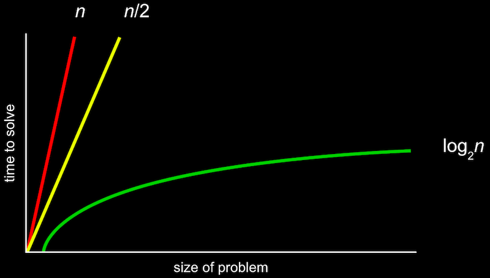

讲座 3
Searching
- Last 时间, we talked 关于 内存 in a computer, or RAM, and how our data can be stored as individual variables or as arrays of many items, or elements.
- We can think of an array with a number of items as a row of lockers, where a computer can only 打开 one locker to look at an item, one at a 时间.
- For 示例, if we want to check whether a number is in an array, with an algorithm that took in an array as input and produce a boolean as a result, we might:
- look in each locker, or at each element, one at a 时间, from the beginning to the end.
- This is called linear 搜索, where we move in a line, since our array isn’t sorted.
- start in the middle and move left or right depending on what we’re looking for, if our array of items is sorted.
- This is called 二分搜索, since we can divide our problem in two with each step, like what David did with the phone book in 第 0 周.
- look in each locker, or at each element, one at a 时间, from the beginning to the end.
- We might write pseudocode for linear 搜索 with:
For i from 0 to n–1 If i'th element is 50 Return true Return false- We can label each of
nlockers from0ton–1, and check each of them in order.
- We can label each of
- For 二分搜索, our algorithm might look like:
If no items Return false If middle item is 50 Return true Else if 50 < middle item Search left half Else if 50 > middle item Search right half- Eventually, we won’t have any parts of the array left (if the item we want wasn’t in it), so we can return
false. - Otherwise, we can 搜索 each half depending on the value of the middle item.
- Eventually, we won’t have any parts of the array left (if the item we want wasn’t in it), so we can return
Big O
- In 第 0 周, we saw different types of 算法 and their running times:

- The 更多 formal way to describe this is with big O notation, which we can think of as “on the order of”. For 示例, if our algorithm is linear 搜索, it will take approximately O(n) steps, “on the order of n”. In fact, even an algorithm that looks at two items at a 时间 and takes n/2 steps has O(n). This is because, as n gets bigger and bigger, only the largest term, n, matters.
- Similarly, a logarithmic running 时间 is O(log n), no matter what the base is, since this is just an approximation of what happens with n is very large.
- There are some common running times:
- O(n2)
- O(n log n)
- O(n)
- (linear 搜索)
- O(log n)
- (二分搜索)
- O(1)
- Computer scientists might also use big Ω, big Omega notation, which is the lower bound of number of steps for our algorithm. (Big O is the upper bound of number of steps, or the worst case, and typically what we care 关于 更多.) With linear 搜索, for 示例, the worst case is n steps, but the best case is 1 step since our item might happen to be the first item we check. The best case for 二分搜索, too, is 1 since our item might be in the middle of the array.
- And we have a similar set of the most common big Ω running times:
- Ω(n2)
- Ω(n log n)
- Ω(n)
- (counting the number of items)
- Ω(log n)
- Ω(1)
- (linear 搜索, 二分搜索)
Linear 搜索
- Let’s take a look at
numbers.c:#include <cs50.h> #include <stdio.h> int main(void) { // An array of numbers int numbers[] = {4, 8, 15, 16, 23, 42}; // Search for 50 for (int i = 0; i < 6; i++) { if (numbers[i] == 50) { printf("Found\n"); return 0; } } printf("Not found\n"); return 1; }- Here we initialize an array with some values, and we check the items in the array one at a 时间, in order.
- And in each case, depending on whether the value was found or not, we can return an exit code of either 0 (for success) or 1 (for failure).
- We can do the same for names:
#include <cs50.h> #include <stdio.h> #include <string.h> int main(void) { // An array of names string names[] = {"EMMA", "RODRIGO", "BRIAN", "DAVID"}; // Search for EMMA for (int i = 0; i < 4; i++) { if (strcmp(names[i], "EMMA") == 0) { printf("Found\n"); return 0; } } printf("Not found\n"); return 1; }- We can’t compare strings directly, since they’re not a simple data type but rather an array of many characters, and we need to compare them differently. Luckily, the
stringlibrary has astrcmpfunction which compares strings for us and returns0if they’re the same, so we can use that.
- We can’t compare strings directly, since they’re not a simple data type but rather an array of many characters, and we need to compare them differently. Luckily, the
- Let’s try to implement a phone book with the same ideas:
#include <cs50.h> #include <stdio.h> #include <string.h> int main(void) { string names[] = {"EMMA", "RODRIGO", "BRIAN", "DAVID"}; string numbers[] = {"617–555–0100", "617–555–0101", "617–555–0102", "617–555–0103"}; for (int i = 0; i < 4; i++) { if (strcmp(names[i], "EMMA") == 0) { printf("Found %s\n", numbers[i]); return 0; } } printf("Not found\n"); return 1; }- We’ll use strings for phone numbers, since they might include formatting or be too long for a number.
- Now, if the 姓名 at a certain index in the
namesarray matches who we’re looking for, we’ll return the phone number in thenumbersarray, at the same index. But that means we need to particularly careful to make sure that each number corresponds to the 姓名 at each index, especially if we add or remove names and numbers.
Structs
- It turns out that we can make our own custom data types called structs:
#include <cs50.h> #include <stdio.h> #include <string.h> typedef struct { string name; string number; } person; int main(void) { person people[4]; people[0].name = "EMMA"; people[0].number = "617–555–0100"; people[1].name = "RODRIGO"; people[1].number = "617–555–0101"; people[2].name = "BRIAN"; people[2].number = "617–555–0102"; people[3].name = "DAVID"; people[3].number = "617–555–0103"; // Search for EMMA for (int i = 0; i < 4; i++) { if (strcmp(people[i].name, "EMMA") == 0) { printf("Found %s\n", people[i].number); return 0; } } printf("Not found\n"); return 1; }- We can think of structs as containers, inside of which are multiple other data types.
- Here, we create our own type with a struct called
person, which will have astringcallednameand astringcallednumber. Then, we can create an array of these struct types and initialize the values inside each of them, using a new syntax,., to access the properties of eachperson. - In our loop, we can now be 更多 certain that the
numbercorresponds to thenamesince they are from the samepersonelement.
Sorting
- If our input is an unsorted list of numbers, there are many 算法 we could use to produce an output of a sorted list.
- With eight volunteers on the stage with the following numbers, we might consider swapping pairs of numbers 下一页 to each other as a first step.
- Our volunteers start in the following random order:
6 3 8 5 2 7 4 1 - We look at the first two numbers, and swap them so they are in order:
6 3 8 5 2 7 4 1 – – 3 6 8 5 2 7 4 1 - The 下一页 pair,
6and8, are in order, so we don’t need to swap them. - The 下一页 pair,
8and5, need to be swapped:3 6 8 5 2 7 4 1 – – 3 6 5 8 2 7 4 1 - We continue until we reach the end of the list:
3 6 5 2 8 7 4 1 – – 3 6 5 2 7 8 4 1 – – 3 6 5 2 7 4 8 1 – – 3 6 5 2 7 4 1 8 - Our list isn’t sorted yet, but we’re slightly closer to the solution because the biggest value,
8, has been shifted all the way to the right. - We repeat this with another pass through the list:
3 6 5 2 7 4 1 8 – – 3 6 5 2 7 4 1 8 – – 3 5 6 2 7 4 1 8 – – 3 5 2 6 7 4 1 8 – – 3 5 2 6 7 4 1 8 – – 3 5 2 6 4 7 1 8 – – 3 5 2 6 4 1 7 8- 笔记 that we didn’t need to swap the 3 and 6, or the 6 and 7.
- Now, the 下一页 biggest value,
7, moved all the way to the right. If we repeat this, 更多 and 更多 of the list becomes sorted, and pretty quickly we have a fully sorted list. - This algorithm is called 冒泡排序, where large values “bubble” to the right. The pseudocode for this might look like:
Repeat n–1 times For i from 0 to n–2 If i'th and i+1'th elements out of order Swap them- Since we are comparing the
i'thandi+1'thelement, we only need to go up to n – 2 fori. Then, we swap the two elements if they’re out of order. - And we can stop after we’ve made n – 1 passes, since we know the largest n–1 elements will have bubbled to the right.
- Since we are comparing the
- We have n – 2 steps for the inner loop, and n – 1 loops, so we get n2 – 3n + 2 steps total. But the largest factor, or dominant term, is n2, as
ngets larger and larger, so we can say that 冒泡排序 is O(n2). - We’ve seen running times like the following, and so even though 二分搜索 is much faster than linear 搜索, it might not be worth the one–时间 cost of sorting the list first, unless we do lots of searches over 时间:
- O(n2)
- 冒泡排序
- O(n log n)
- O(n)
- linear 搜索
- O(log n)
- 二分搜索
- O(1)
- O(n2)
- And Ω for 冒泡排序 is still n2, since we still check each pair of elements for n – 1 passes.
选择排序
- We can take another approach with the same set of numbers:
6 3 8 5 2 7 4 1 - First, we’ll look at each number, and remember the smallest one we’ve seen. Then, we can swap it with the first number in our list, since we know it’s the smallest:
6 3 8 5 2 7 4 1 – – 1 3 8 5 2 7 4 6 - Now we know at least the first element of our list is in the right place, so we can look for the smallest element among the rest, and swap it with the 下一页 unsorted element (now the second element):
1 3 8 5 2 7 4 6 – – 1 2 8 5 3 7 4 6 - We can repeat this over and over, until we have a sorted list.
- This algorithm is called 选择排序, and we might write pseudocode like this:
For i from 0 to n–1 Find smallest item between i'th item and last item Swap smallest item with i'th item - With big O notation, we still have running 时间 of O(n2), since we were looking at roughly all n elements to find the smallest, and making n passes to 排序 all the elements.
- 更多 formally, we can use some formulas to show that the biggest factor is indeed n2:
n + (n – 1) + (n – 2) + ... + 1 n(n + 1)/2 (n^2 + n)/2 n^2/2 + n/2 O(n^2) - So it turns out that 选择排序 is fundamentally 关于 the same as 冒泡排序 in running 时间:
- O(n2)
- 冒泡排序, 选择排序
- O(n log n)
- O(n)
- linear 搜索
- O(log n)
- 二分搜索
- O(1)
- O(n2)
- The best case, Ω, is also n2.
- We can go 返回 to 冒泡排序 and change its algorithm to be something like this, which will allow us to stop early if all the elements are sorted:
Repeat until no swaps For i from 0 to n–2 If i'th and i+1'th elements out of order Swap them- Now, we only need to look at each element once, so the best case is now Ω(n):
- Ω(n2)
- 选择排序
- Ω(n log n)
- Ω(n)
- 冒泡排序
- Ω(log n)
- Ω(1)
- linear 搜索, 二分搜索
- Ω(n2)
- Now, we only need to look at each element once, so the best case is now Ω(n):
- We look at a visualization online comparing sorting 算法 with animations for how the elements move within arrays for both 冒泡排序 and 选择排序.
递归
- Recall that in 第 0 周, we had pseudocode for finding a 姓名 in a phone book, where we had lines telling us to “go 返回” and repeat some steps:
1 Pick up phone book 2 Open to middle of phone book 3 Look at page 4 If Smith is on page 5 Call Mike 6 Else if Smith is earlier in book 7 Open to middle of left half of book 8 **Go back to line 3** 9 Else if Smith is later in book 10 Open to middle of right half of book 11 **Go back to line 3** 12 Else 13 Quit - We could instead just repeat our entire algorithm on the half of the book we have left:
1 Pick up phone book 2 Open to middle of phone book 3 Look at page 4 If Smith is on page 5 Call Mike 6 Else if Smith is earlier in book 7 **Search left half of book** 8 9 Else if Smith is later in book 10 **Search right half of book** 11 12 Else 13 Quit- This seems like a cyclical process that will never end, but we’re actually dividing the problem in half each 时间, and stopping once there’s no 更多 book left.
- 递归 occurs when a function or algorithm refers to itself, as in the new pseudocode above.
- In 第 1 周, too, we implemented a “pyramid” of blocks in the following shape:
# ## ### ####- And we might have had iterative code like this:
#include <cs50.h> #include <stdio.h> void draw(int h); int main(void) { // Get height of pyramid int height = get_int("Height: "); // Draw pyramid draw(height); } void draw(int h) { // Draw pyramid of height h for (int i = 1; i <= h; i++) { for (int j = 1; j <= i; j++) { printf("#"); } printf("\n"); } }- Here, we use
forloops to print each block in each row.
- Here, we use
- And we might have had iterative code like this:
- But notice that a pyramid of height 4 is actually a pyramid of height 3, with an extra row of 4 blocks added on. And a pyramid of height 3 is a pyramid of height 2, with an extra row of 3 blocks. A pyramid of height 2 is a pyramid of height 1, with an extra row of 2 blocks. And finally, a pyramid of height 1 is just a pyramid of height 0, or nothing, with another row of a single block added on.
- With this idea in mind, we can write:
#include <cs50.h> #include <stdio.h> void draw(int h); int main(void) { // Get height of pyramid int height = get_int("Height: "); // Draw pyramid draw(height); } void draw(int h) { // If nothing to draw if (h == 0) { return; } // Draw pyramid of height h - 1 draw(h - 1); // Draw one more row of width h for (int i = 0; i < h; i++) { printf("#"); } printf("\n"); }- Now, our
drawfunction first calls itself recursively, drawing a pyramid of heighth - 1. But even before that, we need to stop ifhis 0, since there won’t be anything left to drawn. - After, we draw the 下一页 row, or a row of width
h.
- Now, our
归并排序
- We can take the idea of recusion to sorting, with another algorithm called 归并排序. The pseudocode might look like:
If only one item Return Else Sort left half of items Sort right half of items Merge sorted halves - We’ll best see this in practice with an unsorted list:
7 4 5 2 6 3 8 1 - First, we’ll 排序 the left half (the first four elements):
7 4 5 2 | 6 3 8 1 – – – – - Well, to 排序 that, we need to 排序 the left half of the left half first:
7 4 | 5 2 | 6 3 8 1 – – - Now, we have just one item,
7, in the left half, and one item,4, in the right half. So we’ll merge that together, by taking the smallest item from each list first:– – | 5 2 | 6 3 8 1 4 7 - And now we go 返回 to the right half of the left half, and 排序 it:
– – | – – | 6 3 8 1 4 7 | 2 5 - Now, both halves of the left half are sorted, so we can merge the two of them together. We look at the start of each list, and take
2since it’s smaller than4. Then, we take4, since it’s now the smallest item at the front of both lists. Then, we take5, and finally,7, to get:– – – – | 6 3 8 1 – – – – 2 4 5 7 - We now 排序 the right half the same way. First, the left half of the right half:
– – – – | – – | 8 1 – – – – | 3 6 | 2 4 5 7 - Then, the right half of the right half:
– – – – | – – | – – – – – – | 3 6 | 1 8 2 4 5 7 - We can merge the right half together now:
– – – – | – – – – – – – – | – – – – 2 4 5 7 | 1 3 6 8 - And finally, we can merge both halves of the whole list, following the same steps as before. Notice that we don’t need to check all the elements of each half to find the smallest, since we know that each half is already sorted. Instead, we just take the smallest element of the two at the start of each half:
– – – – | – – – – – – – – | – – – – 2 4 5 7 | – 3 6 8 1– – – – | – – – – – – – – | – – – – – 4 5 7 | – 3 6 8 1 2– – – – | – – – – – – – – | – – – – – 4 5 7 | – – 6 8 1 2 3– – – – | – – – – – – – – | – – – – – – 5 7 | – – 6 8 1 2 3 4– – – – | – – – – – – – – | – – – – – – – 7 | – – 6 8 1 2 3 4 5– – – – | – – – – – – – – | – – – – – – – 7 | – – – 8 1 2 3 4 5 6– – – – | – – – – – – – – | – – – – – – – – | – – – 8 1 2 3 4 5 6 7– – – – | – – – – – – – – | – – – – – – – – | – – – – 1 2 3 4 5 6 7 8 - It took a lot of steps, but it actually took fewer steps than the other 算法 we’ve seen so far. We broke our list in half each 时间, until we were “sorting” eight lists with one element each:
7 | 4 | 5 | 2 | 6 | 3 | 8 | 1 4 7 | 2 5 | 3 6 | 1 8 2 4 5 7 | 1 3 6 8 1 2 3 4 5 6 7 8 - Since our algorithm divided the problem in half each 时间, its running 时间 is logarithmic with O(log n). And after we sorted each half (or half of a half), we needed to merge together all the elements, with n steps since we had to look at each element once.
- So our total running 时间 is O(n log n):
- O(n2)
- 冒泡排序, 选择排序
- O(n log n)
- 归并排序
- O(n)
- linear 搜索
- O(log n)
- 二分搜索
- O(1)
- O(n2)
- Since log n is greater than 1 but 较少 than n, n log n is in between n (times 1) and n2.
- The best case, Ω, is still n log n, since we still 排序 each half first and then merge them together:
- Ω(n2)
- 选择排序
- Ω(n log n)
- 归并排序
- Ω(n)
- 冒泡排序
- Ω(log n)
- Ω(1)
- linear 搜索, 二分搜索
- Ω(n2)
- Finally, there is another notation, Θ, Theta, which we use to describe running times of 算法 if the upper bound and lower bound is the same. For 示例, 归并排序 has Θ(n log n) since the best and worst case both require the same number of steps. And 选择排序 has Θ(n2).
- We look at a final visualization of sorting 算法 with a larger number of inputs, running at the same 时间.